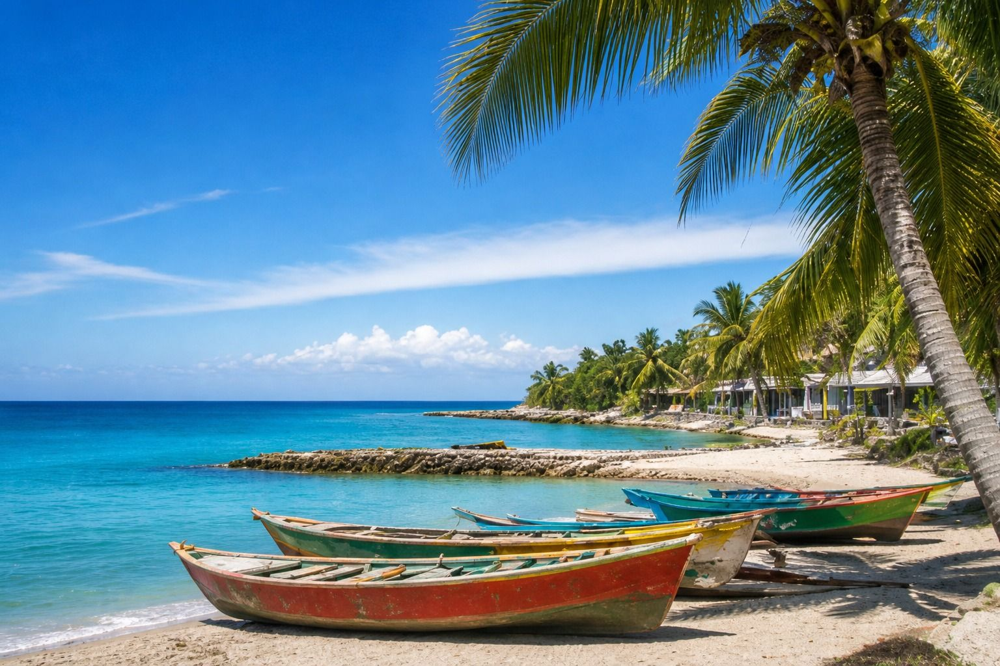
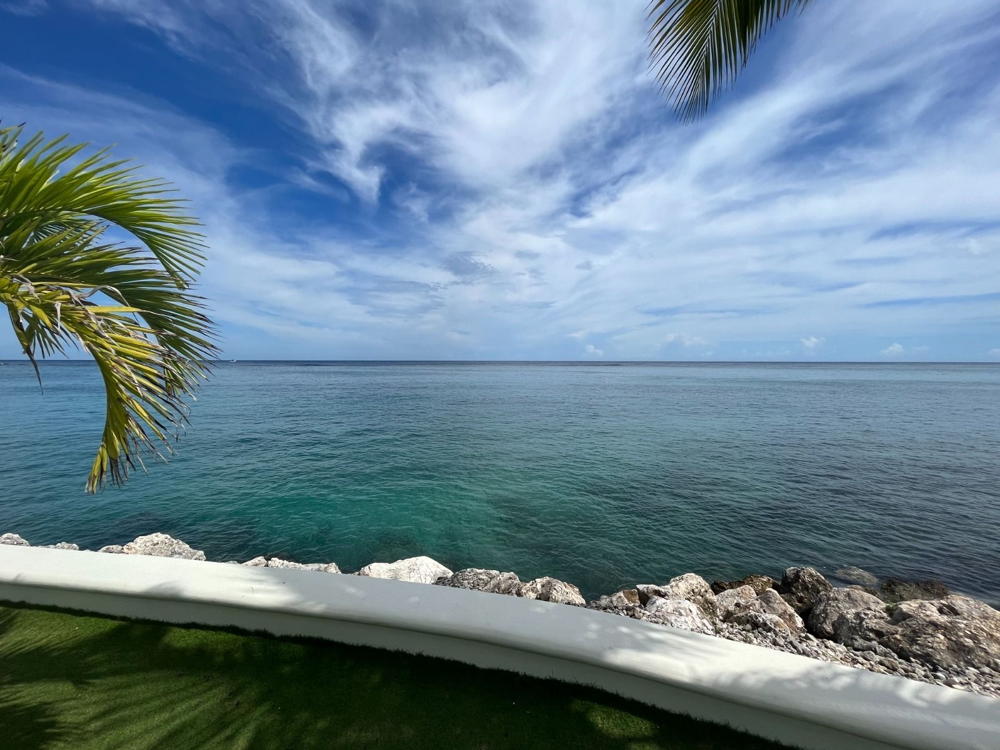
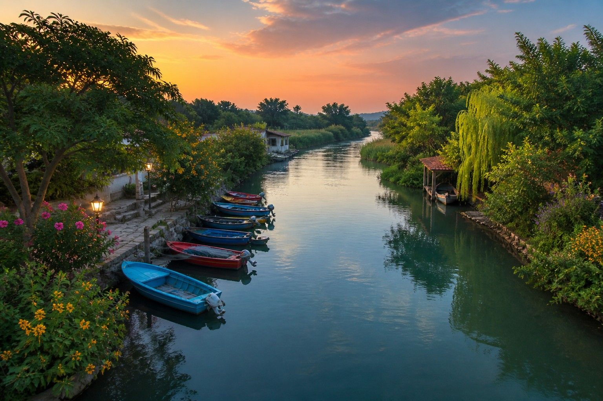
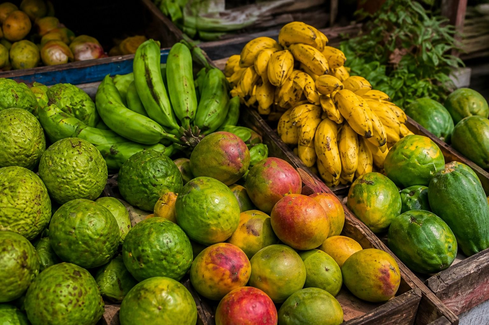
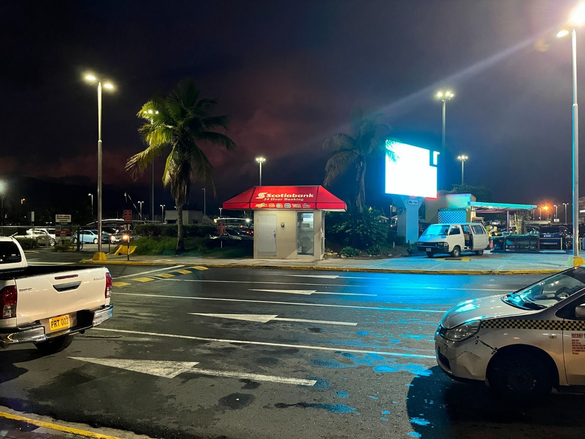

Feel the rhythm of Jamaica
Turquoise sea, quiet rivers, lively markets and a culture the whole world knows. Start exploring the island your way.
Start exploringChoose your Jamaica
Pick a theme to see what the island has in store.

White sand, warm sea
Fishing villages, palm-lined bays and calm Caribbean water make Jamaica's coast perfect for slow days.
- Swim and snorkel in clear water
- Buy fresh fish from local fishermen
- Watch the sunset from the shore

Endless blue horizons
The north coast offers wide views of the Caribbean Sea, seaside walks and boat trips.
- Take a catamaran or glass-bottom boat trip
- Relax at a seaside café

Quiet rivers and green hills
Away from the beach, rivers wind through lush countryside. Rafting and boat rides show a calmer side of the island.
- Go river rafting
- Spot birds and tropical flowers

Taste the island
Local markets overflow with mangoes, plantains, bananas and papaya. Don't leave without trying jerk chicken and ackee and saltfish.
- Visit a local fruit market
- Try jerk chicken and festival
- Drink fresh coconut water

Arriving made easy
International flights land in Montego Bay and Kingston. You'll find 24-hour cash machines, licensed taxis and car rental right outside.
- Use licensed taxis (red PP number plates)
- The local currency is the Jamaican dollar (JMD)
More than a holiday
The birthplace of reggae, ska and dancehall. Music is part of everyday life.
English is the official language, and you'll also hear Jamaican Patois everywhere.
The national motto, "Out of many, one people", celebrates the island's mix of cultures.
Jamaica and the world
This site is built for visitors from the United Kingdom and South Korea, in their own language.
United Kingdom
Long-standing Commonwealth ties and a large Jamaican community in Britain.
South Korea
Growing interest in Caribbean travel, music and food from Korean visitors.
Your personal itinerary
Tell us what you love and we'll suggest a simple plan.